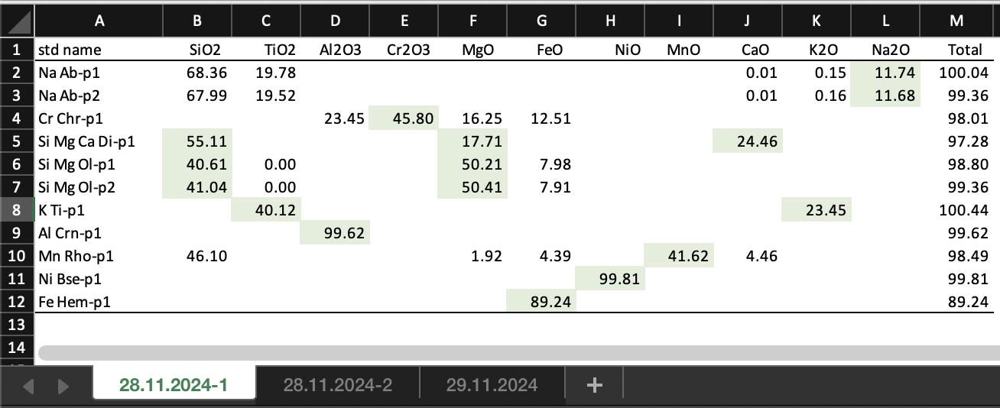

Kadi4Mat backend ELN
This section describes and documents the Electronic Lab Notebook (ELN) backend used for the epmatools frontend that allows users to access data of the JEOL JXA-8530F Plus electron-probe micro-analyser (EPMA) at the Institut für Geowissenschaften, Goethe Universität Frankfurt am Main.
What is an ELN?
xxx
What is Kadi4Mat?
Kadi4Mat – or in short Kadi – is an Electronic Lab Notebook (ELN) that we use for EPMA results management and making data FAIR. Kadi is an online system that can be accessed with only a browser. A login is might be possible through your university email (if the Shibboleth AAI is connected to Kadi) or by applying for an account. However, we use the Kadi Python API for our tools, and with these, no login to Kadi is necessary.
Naming a Kadi record
Each record starts with ‘GUF IfG EPMA’
A single measurement session, i.e., the session of one party with a single set of samples can make use of different measurement programs, i.e., different measurement setups and parameters. For example, when first silicates and then sulphides are measured. In this case, the results have all the same name, but for each specific measurement program a separate record is created, with a lettered postfix in the form of: -a, -b, -c, … The first record with the postfix -a contains files that are similar for all records with this name, e.g., overview images.
Records of a single measurement session might be all put in a Kadi Collection.
Quantitative Analyses
Must contain
summary{date}.csv
The output from: summary, all, to excel, save as .csv
normal.txt
The output from: summary, normal, type out
summary standard.txt
The output from: summary, standard, type out
quick standard.txt
The output from: quick menu, right click recipe, ??
Can contain
standard meausrements
standard measurements.xlsx File with the results from the standard measurements, with colour results, therefore an excel file
-> This file can (in rare cases) be missing, so it might be sensible to test for its availability and not if it is not available.

Images
Files as .jpg, .tif, .bmp
Video Tutorial
Map Analyses
Must contain
quick standard.txt
The output from: quick menu, right click recipe, ??
{map file}.csv
The naming of {map file} is as follows:
map {nr} {Eds}{internal designation} {element name} {measured characteristic line}.csv
e.g.:
map 2 data004 Mg Ka.csv
note that ‘Eds’ only occurs when the element was measured with EDS, when ‘Eds’ is missing, the element was measured with WDS
Can contain
1 or 2 more map files labelled “data{nr} COMPO.csv” or “data{nr} SE.csv”, which are maps of BSE- and/or SE-signals, i.e., essentially BSE- and SE-images. Image files as .jpg, .tif, .bmp
Qualitative Analyses
Must contain
summary{date}.csv
The output from: summary, all, to excel, save as .csv
normal.txt
The output from: summary, normal, type out
summary standard.txt
The output from: summary, standard, type out
quick standard.txt
The output from: quick menu, right click recipe, ??
Output
Measurement Conditions
Detection limits (d.l.) are calculated by the machine software for each measurement point. The output in the webinterface is the median of all measurements togehter with the standard deviation.
Flank Method Data
The same as in Quantitative Data, plus an offline corrected full summary file (csv).
Upload
Upload all files to Kadi4Mat.
Provide additional, sensible info. Inivite the person to the respective group. Include the Kadi record in other, sensible groups.
Video Tutorials
Preparing files for Kadi upload
Upload to Kadi